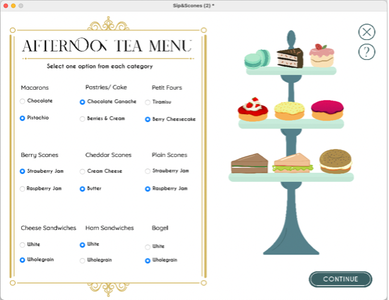
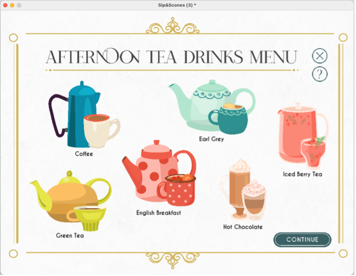
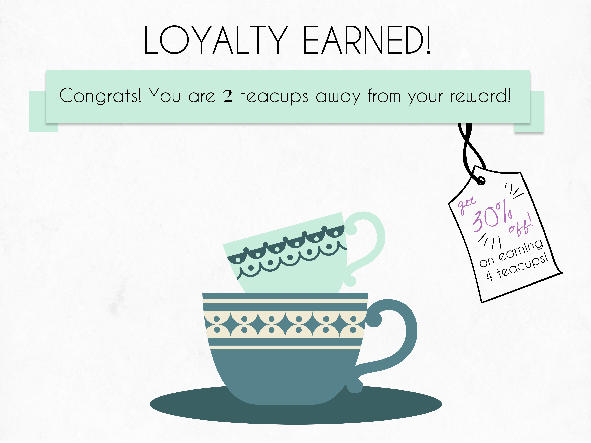

Key Features
Theme-led interactions that work within low-code constraints
The application aimed to feel delightful and themed while staying realistic to implement in LiveCode. Every feature decision balanced the elegance of the afternoon tea experience with what was genuinely buildable.
Tiered tray menu
Landscape orientation mimics a physical afternoon tea tray and uses labelled visual indicators for each food tier — sandwiches, scones, and sweets each occupy their own layer.
Drinks selection
Illustrative icons and radio buttons simplify choices while clear visual states reduce clutter — keeping the interface focused and calm throughout.
Loyalty program
Each completed order earns a teacup icon — four teacups unlock a 30% discount, turning a transactional mechanic into a thematically coherent ritual.
Payment simulation
A Pay Now button triggers a confirmation dialog that mimics digital transaction feedback — providing closure to the ordering experience.
Help access
A persistent Help button simulates calling a server — supporting users during moments of uncertainty without breaking the flow or requiring a restart.
Order reset
Cancel Order prompts confirmation and then resets the process — reducing confusion and giving users a safe exit without accidental data loss.


